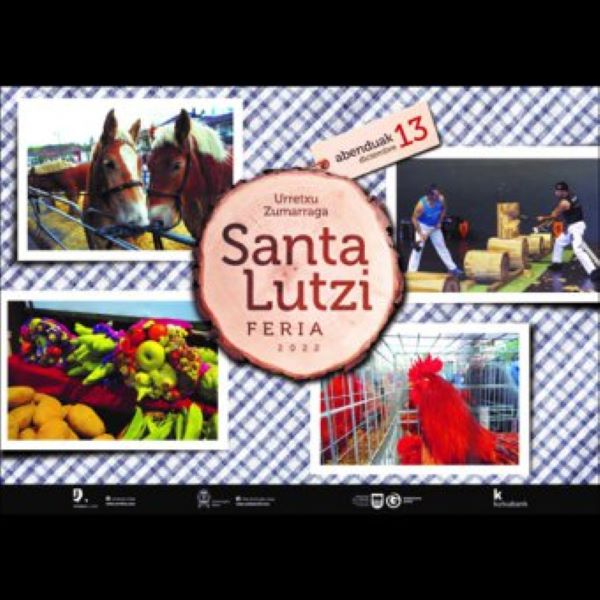

FERIAS DICIEMBRE
Aqui teneis fecha y lugar de las ferias del sector de diciembre
| FERIA | FECHA | LUGAR | DESCRIPCION | + INFO |
|---|---|---|---|---|
| SANTA LUCIA | 12 Y 13 DICIEMBRE | ZUMARRAGA Y URRETXU | GASTRONOMICA Y CULTURAL |

(fuente:www.diariovasco.com) |
| SANTO TOMAS | 21 DICIEMBRE | DONOSTIA | GASTRONOMICA Y CULTURAL |

(fuente:www.donostiakultura.eus) |